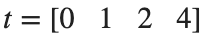

MATLAB Array Operations, Functions, and Plots
English translation
Learning objectives
Calculate distance and velocity from coordinate changes, and check the results using functions and plots.
Execution conditions
Use MATLAB or MATLAB Online. The basic activities run in MATLAB alone and do not require a drone connection.
Distinguish elementwise calculations from matrix multiplication
Starting conditions
Create and as column vectors.
Procedure
- Calculate segment lengths using sqrt and .^, and compare with hypot.
- Compare the sizes and meanings of dx.*dy and dx*dy'.
Results to retain
- The difference between the two distance calculations and a comparison of multiplication methods.
dx=[.3;.4;0];dy=[.4;0;.2];
segment_m=sqrt(dx.^2+dy.^2);
disp(segment_m);disp(hypot(dx,dy));
% TODO: Compare the sizes of element-wise and matrix products.
Record results and self-check
Operations | |
Result size | |
Units/meaning |
Points to check
- Did you keep power and matrix multiplication operators distinct?
- Did you distinguish units of length from units of squared length?
Calculate vertical velocity using timestamp intervals
Starting conditions

s, height=[0,.4,.9,.7] m.Procedure
- Compute diff(height) and diff(t), then divide elementwise to calculate average vertical velocity for the three intervals.
- Plot height at measurement times and vertical velocity at the midpoint of each interval. Label axes and units on each plot.
- For the final interval 2–4 s, calculate values using the actual time difference and assuming 1 s. In two rows, record the height change, time difference used, and calculated vertical velocity, and explain the difference.
Results to retain
- Height/vertical velocity plots and a comparison for the final interval.
t=[0;1;2;4];height_m=[0;.4;.9;.7];
velocity_mps=diff(height_m)./diff(t);
midpoint_s=(t(1:end-1)+t(2:end))/2;
plot(midpoint_s,velocity_mps,'o-');xlabel('Time [s]');ylabel('Velocity [m/s]');grid on;
% TODO: Compare the height plot with the results from incorrect time intervals.
Record results and self-check
Interval [s] | |
Height change [m] | |
Velocity [m/s] |
Points to check
- Did you account for diff returning one fewer element than the original array?
- Did you use the irregular measurement intervals as given?
Reuse a calculation rule as a function
Starting conditions
Apply segmentLength=@(dx,dy) hypot(dx,dy) to new coordinate changes as well.
Procedure
- Pass two vectors of equal length to the function.
- Check the resulting size when one input is a row vector and the other is a column vector.
- Check that inputs have the same shape, or standardize their shapes.
Results to retain
- A small reusable function and 1 invalid input example.
segmentLength=@(dx,dy) hypot(dx,dy);
disp(segmentLength([.1;.2],[.2;.1]));
% TODO: Add input-size checks and handling for row and column inputs.
Record results and self-check
Input size | |
Output size | |
Processing rule |
Points to check
- Did implicit expansion produce a larger matrix than expected?
- Did fixing the shape preserve element correspondence?